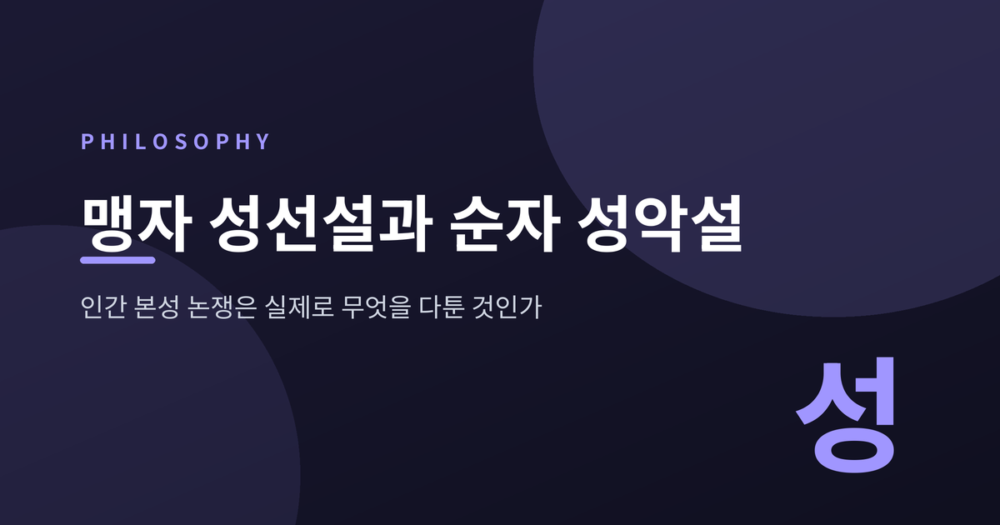
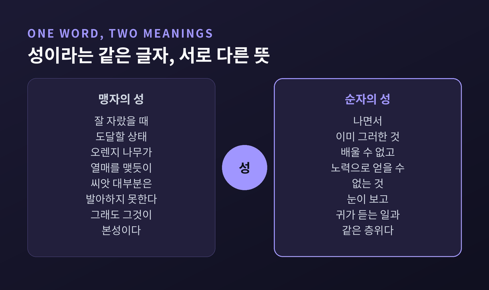
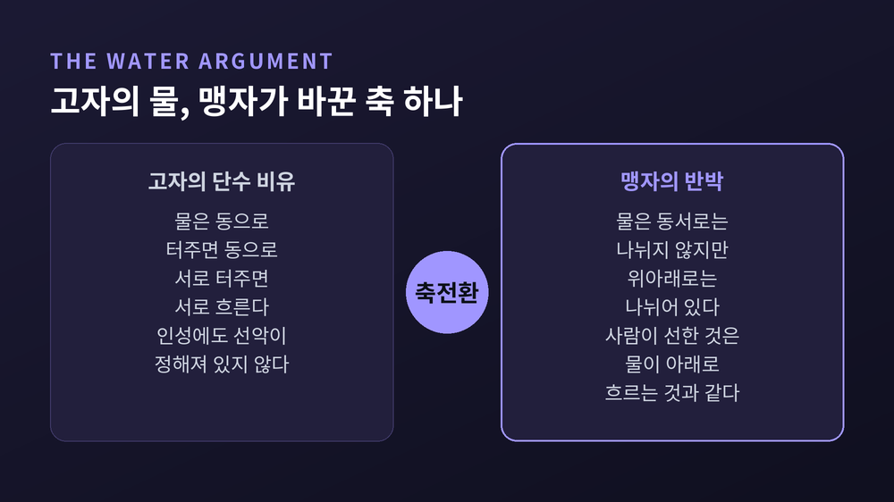
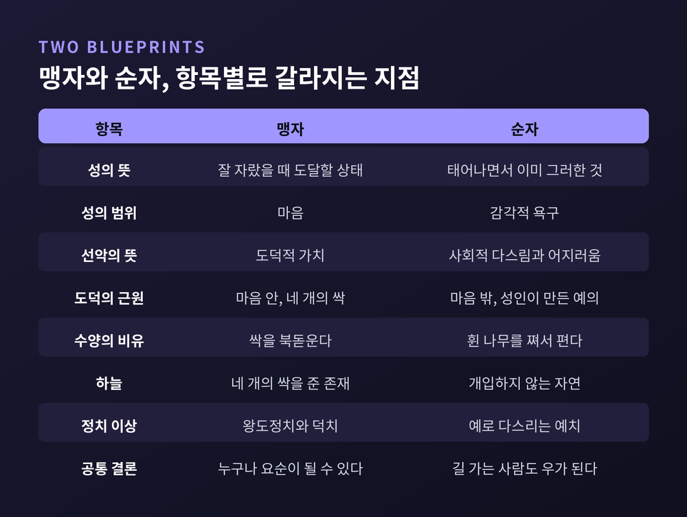

세 줄 요약
이번 글에서는 동양철학에서 가장 오래 회자된 논쟁 하나를 정리해 보겠습니다. 인간은 본래 선한가, 악한가. 결론부터 말씀드리면 이 질문 자체가 두 사람이 실제로 다툰 지점이 아니었습니다.

맹자는 기원전 4세기 후반에서 3세기 초를 살았습니다. 통상 기원전 372년에서 289년으로 표기하지만, 최근 연구자 다수는 이보다 20년쯤 앞당겨 봅니다. 순자는 기원전 310년 무렵 태어나 238년 이후까지 살았습니다. 한 세대 차이입니다.
두 사람은 모두 공자를 계승한다고 자처했습니다. 그런데 정반대 결론에 도달했습니다.
열쇠는 '성(性)'이라는 글자에 있습니다.
A. C. 그레이엄이 1967년에 밝힌 바에 따르면, 맹자와 그 시대 사람들은 "X의 성"을 X가 제 종류에 맞는 건강한 환경에서 자랐을 때 발현될 특성으로 이해했습니다. 그래서 어떤 특성이 그것의 본성이면서도, 현실의 개체 대부분이 그 특성을 갖지 않는 일이 얼마든지 가능합니다.
스탠퍼드 철학백과가 든 예가 선명합니다. 오렌지 나무가 열매를 맺는 것은 그 본성입니다. 그러나 오렌지 씨앗 대다수는 발아조차 하지 못합니다.
순자의 정의는 다릅니다. 『순자』의 문장은 이렇습니다. "나면서 그러한 것을 성이라 한다." 태어날 때 이미 갖춘 능력과 욕구의 집합입니다. 순자는 이를 못 박아 둡니다. "배울 수도 없고 노력으로 얻을 수도 없으나 우리 안에 있는 것을 성이라 하고, 배울 수 있고 노력으로 완성할 수 있는 것을 위(僞)라 한다."
한쪽은 도착점을 가리키고, 다른 한쪽은 출발점을 가리킵니다. 같은 단어로 말입니다.

맹자의 논증은 사고실험 하나에 압축되어 있습니다. 『맹자』 2A6에 나오는 유자입정(孺子入井)입니다.
어린아이가 우물에 빠지려는 것을 언뜻 본 순간을 상상해 보십시오. 누구든 깜짝 놀라며 불쌍히 여기는 마음이 일어납니다.
맹자는 그 마음이 무엇이 아닌지를 세 번 부정합니다. 아이의 부모와 교분을 트기 위한 것이 아닙니다. 동네 사람들에게 칭찬을 듣기 위한 것도 아닙니다. 아이를 구하지 않았다고 비난받는 소리가 싫어서도 아닙니다.
계산이 끼어들 틈이 없는 찰나에 무엇이 먼저 튀어나오는가. 맹자가 묻는 것은 이것입니다.
이 마음이 측은지심이고, 자라면 인(仁)이 됩니다. 맹자는 이런 마음의 싹을 넷으로 꼽았습니다.
| 마음(四端) | 무엇인가 | 자라나는 덕 |
|---|---|---|
| 측은지심(惻隱之心) | 남의 고통을 안타까워하는 마음 | 인(仁) |
| 수오지심(羞惡之心) | 부끄러워하고 미워하는 마음 | 의(義) |
| 사양지심(辭讓之心) | 사양하고 공경하는 마음 | 예(禮) |
| 시비지심(是非之心) | 옳고 그름을 가리는 마음 | 지(智) |
『맹자』 6A6의 표현이 인상적입니다. "인·의·예·지는 밖에서 우리에게 용접해 붙인 것이 아니다. 우리가 본래 지니고 있다. 다만 우리가 그것을 반성하지 않을 뿐이다."
여기서 '단(端)'을 '싹'으로 옮기는 것이 중요합니다. 싹은 다 자란 나무가 아닙니다. 맹자가 농사 비유를 고른 이유가 여기 있습니다. 타고난 덕성은 산발적이고 일관성이 없습니다.
맹자를 "인간은 착하다"로만 읽으면 절반을 놓칩니다.
『맹자』 1A7에 제 선왕 이야기가 나옵니다. 왕은 제물로 끌려가는 소를 불쌍히 여겨 살려 줍니다. 죄 없이 사형장에 끌려가는 자처럼 두려워하더라는 것이 왕의 말입니다. 그런데 같은 왕이 자기 전쟁과 세금으로 고통받는 백성은 못 본 척합니다.
싹은 있으나 자라지 않은 상태입니다. 맹자는 이 마음을 넓히라고 합니다. 확충(擴充)입니다.
확충에는 조건이 셋 붙습니다.
첫째, 먹고사는 문제입니다. 굶주림과 공포 앞에서 한결같은 마음을 지키는 사람은 극소수라고 맹자는 말합니다. 그래서 백성이 죄에 빠졌을 때 벌하는 것은 백성을 덫에 빠뜨리는 일이라고 못 박습니다.
둘째, 교육입니다. 배부르고 따뜻하게 지내도 가르침이 없으면 짐승에 가까워진다고 했습니다.
셋째, 개인의 노력입니다. 바둑 비유가 나옵니다. 같은 스승에게 배워도 한 사람은 마음을 모으고 다른 한 사람은 기러기 쏠 생각을 합니다. 차이는 재능이 아니라 집중이라고 맹자는 답합니다.
정리하자면 이렇습니다. 맹자의 성선은 보증서가 아니라 가능성의 선언입니다.
논쟁을 2파전으로 그리면 실제 지형을 놓칩니다. 『맹자』 「고자」편의 상대는 순자가 아니라 고자(告子)였습니다.
고자의 입장은 성무선무악(性無善無惡)입니다. 본성에는 선도 악도 정해져 있지 않다는 것입니다.
고자는 세 개의 비유를 들었고, 맹자는 세 번 되받았습니다.
버드나무와 술잔 — 고자는 성이 버드나무 같고 의(義)는 그것을 구부려 만든 술잔 같다고 했습니다. 맹자는 되묻습니다. 버드나무의 성질을 이용해 그릇을 만드는가, 성질을 없애서 만드는가. 성질을 없애서 만든다면 인의를 만들기 위해 사람의 본성을 없애야 한다는 말이 됩니다.
소용돌이치는 물 — 고자는 성이 고인 물과 같아 동쪽으로 터주면 동쪽으로, 서쪽으로 터주면 서쪽으로 흐른다고 했습니다. 물이 동서로 정해지지 않은 것처럼 인성도 선악으로 나뉘지 않았다는 것입니다.
맹자는 재료를 그대로 두고 축 하나만 바꿉니다. "물은 동서로는 나뉘어 있지 않지만 위아래로는 나뉘어 있다." 사람의 본성이 선한 것은 물이 아래로 흐르는 것과 같다는 답입니다. 물을 쳐서 이마 위로 튀게 할 수도 있고 막아서 산으로 올릴 수도 있습니다. 그러나 그것을 물의 본성이라 하지는 않습니다.
생지위성(生之謂性) — 타고난 것이 곧 성이라는 고자의 정의입니다. 맹자는 개의 성, 소의 성, 사람의 성이 같겠느냐고 반문합니다.
눈여겨볼 대목은 여기입니다. 고자의 이 세 번째 정의는 뒷날 순자가 서게 될 자리와 사실상 같은 계열입니다. 맹자는 순자가 태어나기 전에 이미 그 정의를 한 번 논박해 둔 셈입니다.
참고로 중국 철학의 성설(性說) 지형은 더 넓습니다. 양웅의 성선악혼효설, 한유의 성삼품설도 있습니다. 2파전이 아니라 최소 다섯 갈래의 지도였습니다.

여기서 번역 문제를 짚고 가야 합니다.
스탠퍼드 철학백과의 순자 항목을 쓴 폴 골딘은 분명한 단서를 답니다. 惡(악)의 기본 뜻은 '혐오스러운(detestable)'에 가깝습니다. 타동사로 읽으면 '미워하다'입니다. 'evil'이라는 번역은 아우구스티누스적 악 개념을 의도하지 않는다는 조건에서만 허용된다고 그는 적었습니다. 그래서 일부 학자는 아예 'bad'를 택합니다.
한국민족문화대백과사전의 정리가 이 지점을 가장 깔끔하게 잡아냅니다.
"맹자가 말하는 인성은 사람의 마음씨를 의미하고 선악은 도덕적 가치를 의미한다. 순자가 말하는 인성은 욕망을 의미하고 선악은 사회적 치란(治亂)을 의미한다."
영어권 최고 수준의 백과와 한국 최고 수준의 백과가 서로 다른 언어로 같은 결론에 닿았습니다. 이 문장이 논쟁 전체의 열쇠입니다.
순자의 '악'은 형이상학적 타락이 아닙니다. 방치하면 다툼과 혼란을 낳는 상태입니다.
「성악」편의 문장을 직접 보겠습니다.
"사람은 나면서 이익을 좋아한다. 이를 따르면 다툼과 싸움이 일어나고, 타고난 사양하는 마음이 사라진다. (…) 그러므로 반드시 스승의 가르침으로 교화되고 예의의 길로 인도된 뒤에야 사양함에 이르고 다스림으로 돌아간다."
그리고 순자가 남긴 가장 유명한 비유가 이어집니다. "휜 나무는 도지개에 대고 쪄서 구부려야 비로소 곧아진다. 무딘 쇠는 숫돌에 갈아야 비로소 날카로워진다."
역설적인 논증도 하나 있습니다. 읽을 때마다 감탄하게 되는 대목입니다.
"사람이 선을 행하고자 하는 것은 언제나 그 본성이 악하기 때문이다. 얕은 자가 깊음을 바라고, 가난한 자가 부를 바란다. 자기에게 없는 것을 밖에서 구하는 법이다."
「성악」편의 신조는 네 글자가 아니라 두 절입니다. 性惡, 그리고 其善者僞也. "본성은 악하고, 그 선한 것은 위(僞)다."
제목만 보고 뒷절을 놓치면 순자를 절반만 읽는 것입니다.
여기서 위(僞)는 허위(虛僞)의 위가 아닙니다. 인위(人爲)이고 작위(作爲)입니다. 사람이 능동적으로 만들어 내는 것입니다.
『순자』의 정의는 이렇습니다. "마음이 헤아리고 다른 기관들이 그것을 실행하는 것, 이것을 위라 한다."
그래서 순자가 수양을 가리키는 말은 본성을 극복하거나 버리는 것이 아닙니다. 화성(化性), 본성을 변화시키는 것입니다.
도공의 비유가 이를 잘 보여 줍니다. 도공이 진흙을 빚어 그릇을 만들지만 그릇은 도공의 위에서 나온 것이지 도공의 본성에서 나온 것이 아닙니다. 예와 의도 마찬가지로 성인의 위에서 나왔습니다.
순자의 예를 사회적 편의로만 읽는 해석이 있습니다. 스탠퍼드 철학백과는 그것으로는 부족하다고 두 가지 이유를 듭니다.
첫째, 아무렇게나 정한 예는 작동하지 않습니다. 성왕의 예가 정당한 이유는 그것이 "인간을 인간이게 하는 것"에 부합하기 때문입니다.
둘째, 예는 사회 결속만이 아니라 도덕적·심리적 성장을 길러 냅니다. 그렇지 않다면 그것은 예가 아니라 편의의 도구일 뿐입니다.
삼년상에 대한 순자의 설명이 이 점을 증명합니다.
"상처가 크면 그 지속이 길고, 아픔이 깊으면 회복이 더디다. 삼년의 상기(喪期)는 감정을 참조해 세운 형식이며, 아픔의 극한을 전달하는 수단이다."
예는 슬픔을 억누르는 장치가 아닙니다. 감당할 수 없는 감정에 형태를 주는 장치입니다.
향음주례 설명도 마찬가지입니다. 주인이 주빈만 직접 맞으러 가는 것은 귀천의 구분을 몸에 새기기 위해서입니다. 나이 순서대로 차례차례 술을 권하는 것은 아무도 배제하지 않으면서 서열을 정렬할 수 있음을 보여 줍니다. 주인이 절하고 배웅하며 자리가 끝나는 것은 어지러워지지 않고도 마음껏 즐길 수 있음을 알립니다.
규칙집이 아니라 몸으로 익히는 교육과정입니다.
한 가지 더 덧붙이겠습니다. 순자에게 마음(心)은 몸의 주인입니다. "명령을 내리되 명령을 받지 않는다"고 했습니다. 그래서 순자는 도덕적 책임을 면제해 주지 않습니다. 부도덕한 길을 걸었다면 감정이나 욕망을 탓할 수 없고, 마음이 규율을 행사하지 못했음을 받아들여야 한다는 것이 그의 결론입니다.
본성이 악하다고 말한 사람이, 인간에게 가장 무거운 책임을 지웠습니다.
정리해 보면 두 사람의 차이는 이렇게 갈라집니다.
| 항목 | 맹자 | 순자 |
|---|---|---|
| 性이 가리키는 것 | 잘 자랐을 때 도달할 상태 | 태어나면서 그러한 것 |
| 性의 범위 | 마음(心) | 감각적 욕구 |
| 善惡이 뜻하는 것 | 도덕적 가치 | 사회적 치란(治亂) |
| 도덕의 근원 | 마음 안 — 사단 | 마음 밖 — 성인의 예의 |
| 수양의 비유 | 싹을 북돋움 | 휜 나무를 쪄서 폄 |
| 하늘(天) | 사단을 준 존재 | 개입하지 않는 자연의 항상성 |
| 정치 이상 | 왕도정치·덕치 | 예치(禮治) |
그런데 결론은 겹칩니다.
맹자는 『맹자』 6B2에서 "모든 사람이 요순이 될 수 있느냐"는 물음에 "그렇다"고 답합니다. 순자는 「성악」편에서 "길 가는 사람도 우(禹)가 될 수 있다"고 씁니다.
순자의 문장은 더 나아갑니다. "본성에 있어 요·순은 걸·척과 하나였고, 군자와 소인도 본성에 있어 하나다." 인간 평등에 관한 한 순자가 더 급진적입니다.
다만 근거가 다릅니다. 맹자는 사람이 본래 선하기 때문이라 했고, 순자는 사람이 본래 알 수 있는 자질을 갖기 때문이라 했습니다.
같은 목적지를 향한 두 개의 설계도입니다. 하나는 이미 심어진 것을 기르는 설계이고, 다른 하나는 없는 것을 세우는 설계입니다.

순자는 생애 말년에 중국 세계 최고의 스승이었습니다. 당대에는 '가장 존경받는 스승(最爲老師)'으로 불렸습니다. 제자 중에 한비와 이사가 있습니다.
그 제자들이 발목을 잡았습니다.
후대에 지치지 않고 반복된 두 가지 상투구가 있습니다. 하나는 그가 반맹자적 교설을 퍼뜨렸다는 것, 다른 하나는 이사와 한비의 스승 노릇으로 법가의 대의를 진척시켰다는 것입니다.
당(唐)대에 순자를 높이 평가한 한유조차 "그의 저작에 중대한 오류가 있다"는 단서를 반드시 덧붙였습니다.
결정적인 것은 주희(1130~1200)였습니다. 주희는 순자의 철학이 신불해·상앙 같은 비유가의 것과 닮았으며, 진(秦)의 재난에 간접적 책임이 있다고 선언했습니다. 이후 제국사 내내 순자는 문화 주류에서 밀려납니다.
그런데 성리학이 순자를 완전히 버린 것은 아닙니다. 흥미로운 대목입니다. 성리학은 맹자의 성을 본연지성(本然之性)으로, 순자의 성을 기질지성(氣質之性)으로 파악해 두 학설을 통합했습니다. 이긴 쪽이 진 쪽을 하위 범주로 흡수한 셈입니다.
그 과정에서 맹자의 말도 조금 바뀌었습니다. 맹자가 쓴 표현은 성선(性善)입니다. 그런데 흔히 인용되는 것은 성본선(性本善), "본성은 본래 선하다"입니다. 이 표현은 주희의 주석에서 대중화된 것입니다. 『삼자경』 첫머리에 들어가 수백 년간 아이들이 외웠습니다.
여기 더 놀라운 사실이 있습니다. 『맹자』 전체에서 '성(性)'이라는 글자가 등장하는 구절은 열일곱 개뿐이고, "성선"이라는 표현이 나오는 구절은 단 둘(3A1, 6A6)입니다.
성선설이라는 이름표는 맹자 자신보다 후대가 훨씬 무겁게 붙였습니다.
한국 유학의 선택도 분명했습니다. 맹자의 성설이 주로 수용되었고 다른 성설은 받아들여지지 않았습니다. 그래서 성론이 여러 갈래로 뻗는 대신, 맹자를 전제한 상태에서 수양 철학이 발달했습니다. 퇴계의 경(敬) 사상과 율곡의 경 사상이 바로 그 열매입니다.
질문이 "본성이 무엇인가"에서 "그 본성을 어떻게 실천하는가"로 옮겨 간 것입니다.
예전에는 순자의 성 정의가 이단적이라고 여겨졌습니다. 지금은 사정이 달라졌습니다.
기원전 300년경으로 편년되는 곽점(郭店) 출토 유가 죽간이 발굴되었기 때문입니다. 그중 『성자명출(性自命出)』은 성을 "한 종의 모든 구성원이 공유하는 타고난 특성의 집합"으로 정의합니다. 순자의 정의와 매우 유사합니다.
고대에 별난 용법을 쓴 쪽은 오히려 맹자였을 가능성이 생긴 것입니다.
순자에 대한 평가도 뒤집혔습니다. 스탠퍼드 철학백과는 "오늘날 조류는 거의 완전히 뒤집혔다"고 적습니다. 순자는 지금 동아시아에서 가장 널리 읽히는 철학자 중 한 사람이고, 지난 20년간 수많은 연구의 주제가 되었습니다. 사후 2천 년이 지나 '최위노사'라는 원래 자리로 돌아온 셈입니다.
다만 신중해야 할 부분도 있습니다. 「성악」편이 순자 본인의 글인지를 두고 학계에 논쟁이 있습니다. 편명 자체가 순자에게서 유래했는지도 불확실합니다. 현존 『순자』는 유향(기원전 79~8년)이 죽간 322편을 모아 290편을 중복으로 걸러 낸 편집본에서 유래하며, 편 구분의 신뢰도가 특히 낮다고 지적됩니다.
가장 유명한 편이 가장 논란이 많은 편이기도 합니다.
순자를 동양의 홉스로, 맹자를 동양의 루소로 놓는 도식이 흔합니다. 편리하지만 조심해야 합니다.
스탠퍼드 철학백과가 예(禮)의 기원을 설명하며 쓴 표현은 "표면적으로 홉스나 루소를 연상시키는(superficially reminiscent of)"입니다. '표면적으로'라는 단서가 분명히 붙어 있습니다. 집필자 본인이 홉스식 독해를 승인하지 않은 것입니다.
같은 저자가 惡의 번역에도 아우구스티누스적 함의를 배제하라는 단서를 달았습니다. 두 번의 단서가 같은 방향을 가리킵니다. 서구 개념 틀을 그대로 얹지 말라는 것입니다.
그럼에도 비교 연구는 활발합니다. 에릭 슈비츠게벨이 맹자·순자·홉스·루소 네 사람을 정면으로 비교한 논문을 썼습니다. 순자에게 자연 상태는 무질서와 갈등이며, 예는 인간 욕망의 무한함에서 비롯하는 혼란을 다루기 위해 성왕이 만든 장치라는 것이 요지입니다.
덕윤리와의 접점도 있습니다. 맹자의 지(智)는 아리스토텔레스의 프로네시스와 어느 정도 닮아, 규칙에 부분적으로만 구속됩니다. 궁극의 기준은 시중(時中)입니다.
맹자가 든 사례가 이를 잘 보여 줍니다. 물에 빠진 형수를 구하는 일은 남녀가 손을 잡지 않는다는 예의 규정을 어길 만한 근거가 됩니다. 언제 예를 어겨야 하는지 아는 것이 곧 지혜라는 것입니다.
순자의 예와 맹자의 예가 갈라지는 지점이 여기입니다.
솔직히 짚어야 할 부분이 있습니다.
첫째, 두 사람이 정말 실질적으로 대립했는지에 대해 학계 의견이 갈립니다. 그레이엄 계열의 해석은 용어 정의의 차이가 대부분이라고 봅니다. 반면 스탠퍼드 철학백과 맹자 항목은 순자의 논쟁 구성이 오해를 부를지라도 실질적 불일치가 남는다고 단서를 답니다. 맹자는 덕을 향한 타고난 소질을 인정하는데, 순자는 이를 명시적으로 부정하는 것으로 보인다는 것입니다.
어느 한쪽이 정답이라고 말씀드리기 어렵습니다.
둘째, 두 사람의 생몰년조차 확정되지 않았습니다. 순자의 사망 연도는 소스마다 다릅니다. 2천 년 전 논쟁을 다루는 일의 조건입니다.
셋째, 성선과 성악이라는 이름표 자체가 후대의 정리입니다. 두 사람이 자기 학설에 그 이름을 붙인 것이 아닙니다.
정리하면 이렇습니다.
맹자와 순자는 인간을 낙관했느냐 비관했느냐로 갈린 것이 아닙니다. 두 사람 모두 인간이 성인이 될 수 있다고 믿었고, 두 사람 모두 가만히 두면 그렇게 되지 않는다고 보았습니다. 다만 도덕의 나침반을 어디에 두느냐가 달랐습니다. 맹자는 안에 두었고, 순자는 밖에 두었습니다.
그러니 이 논쟁의 진짜 질문은 하나로 모입니다 — 가르침은 없는 것을 심는 일인가, 있는 것을 기르는 일인가.
이천 년이 지나도 교육을 두고 우리가 여전히 다투는 질문이, 바로 그것입니다.